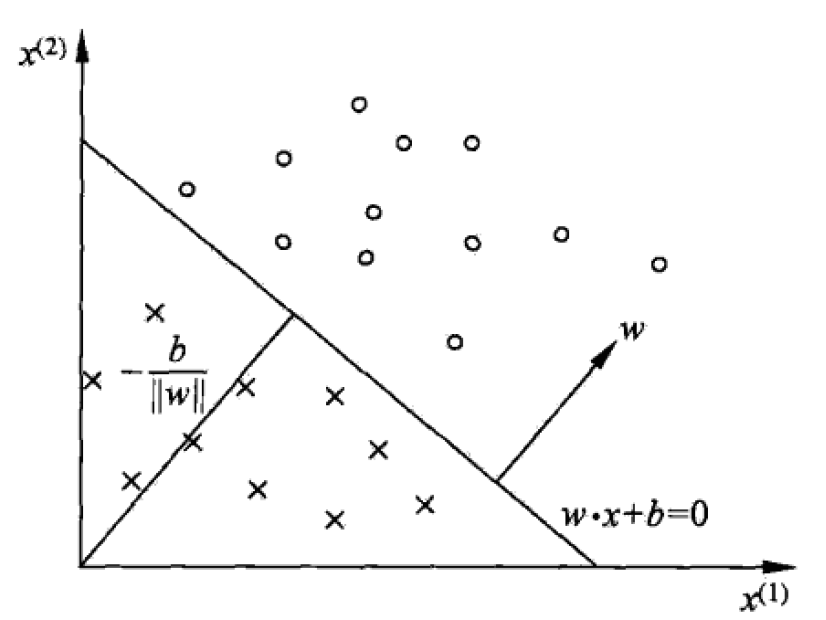

Machine Learning - Perceptron
Perceptron
Perceptron Model
Perceptron is a linear classification model for binary classification problems.
Let the input space (feature space) be $\mathcal{X} \subseteq \mathbb{R}^n$, output space be $\mathcal{Y} = \{-1, +1\}$. The perceptron model is represented by
where $\wb \in \mathbb{R}^n$ is weight or weight vector, and $b \in \mathbb{R}$ is bias.
Goal: minimize classification error

Seperating Hyperplane $S$:
Learning Strategy
Assume the data set is linearly seperable.
Loss function:
where $M$ is the misclassified data set.
Questions:
- Why not to use the number of misclassified points as the loss function?
Algorithm
Minimize the loss function with respect to $\wb$ and $b$:
Apply the gradient descent method:
Stochastic gradient descent method:
For each $\xb_i$,
Algorithm
- Select the initial value for $\wb$ and $b$
- Select a data point $(\xb_i, y_i)$ from the training set
- If $y_i (\wb \cdot \xb_i + b) \leq 0$, update the weight and bias by
- Go back to step 2, until no misclassified data.
Convergence of the Algorithm
- Convergence Proof
- Non-seperable case: does not converge
Dual Perceptron Algorithm
Also know as the Kernel Perceptron.
Perceptron Model
As we can see from the above algorithm, if the initial value of $\wb, b$ are set to zero, when the algorithm is finished, $\wb$ and $b$ are linear combinations of $y_i \xb_i$ and $y_i$, respectively. Thus, $\wb$ and $b$ can be represented by
Thus, the perceptron model has the following form:
Algorithm
- $\alphab \leftarrow 0, b \leftarrow 0$ ($\alphab = (\alpha_1, \alpha_2, \ldots, \alpha_N)$)
- Select a data point $(\xb_i, y_i)$ from the training set
- If $y_i \left(\sum_{j=1}^N \alpha_j y_j \color{red}{ \xb_j \cdot \xb_i} + b\right) \leq 0$, update the $\alpha_i$ and bias $b$ by
- Go back to step 2, until no misclassified data.
Acceleration via the Gram Matrix
The inner product matrix (Gram Matrix) of $\xb_i$ can be precomputed to accelerate the dual algorithm.